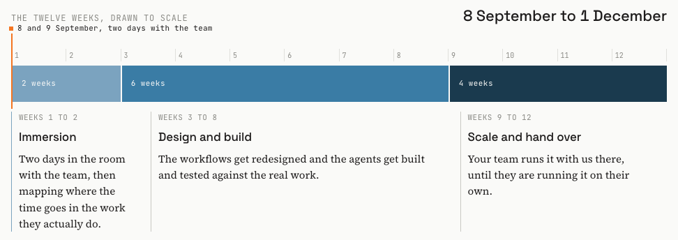
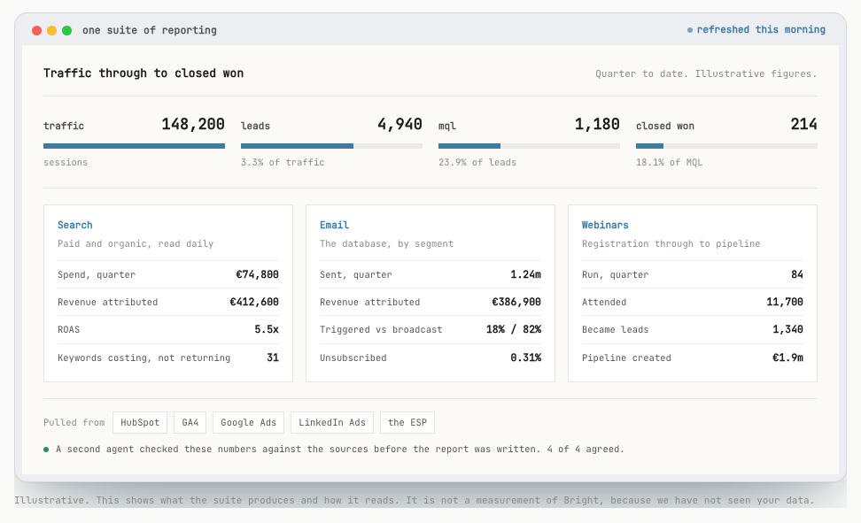
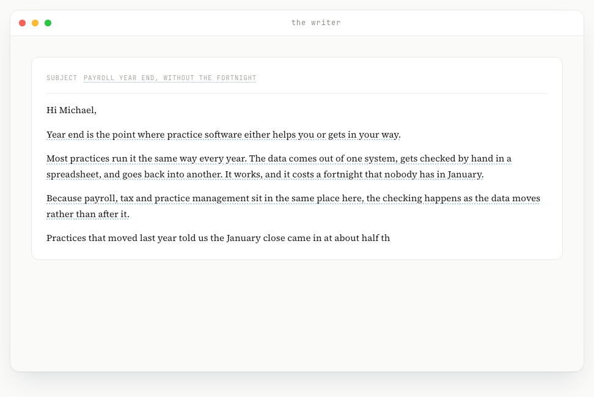
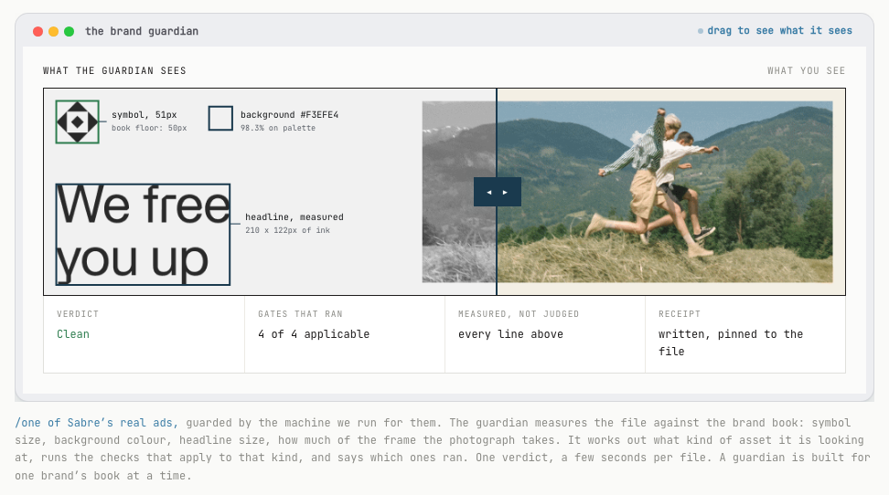
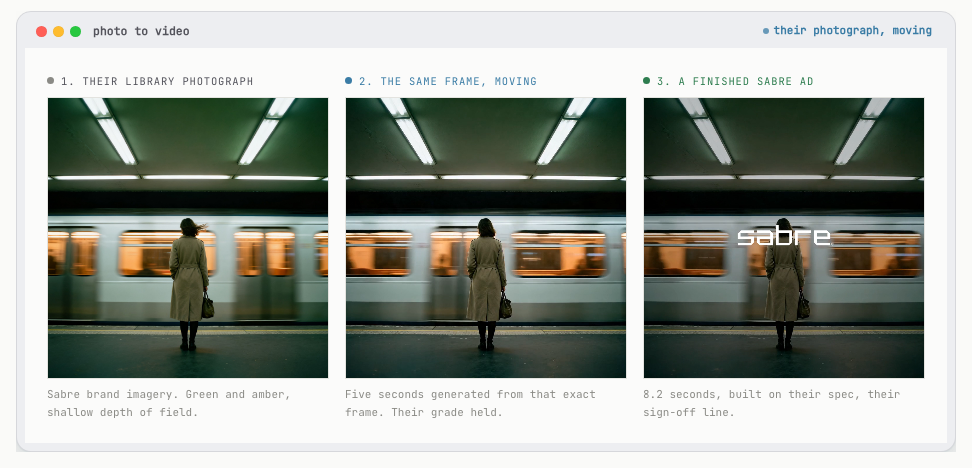

/Runwithfoxes
You have a team of twenty and want to compete like you have a team of sixty. That comes from building AI and agents into the work the team already does. The teams who get fluent now build a real advantage, because the people using it every day keep getting better at it.
Quality first, then automate
Paul Dervan, Run with Foxes · Ireland’s Marketer of the Year, 2022
Before I build anything, I ask one question: what does really good look like here? Not what AI can do, but what the best version of this marketing would be, and the level of quality and effectiveness I would want to stand over.
So I start where I always have. If there were no AI at all, what team would I hire to do this properly? I map that team first, the one I would build in a world before any of this existed.
Then I build exactly that, with agents instead of hires. The quality bar is set by the team I would have wanted, not by whatever a tool happens to make easy. Twenty years in brand is what tells me where that bar sits: Head of Brand at O2 Ireland, then CMO at the National Lottery, Head of Brand at Indeed and Miro, both global roles. Positioning, messaging and tone written first, then built into everything the agents make.
“His command of marketing science as well as his instincts for great thinking and ideas are, in my opinion, superb.”
Peter Field
The Godfather of Effectiveness,
author of The Long and the Short of It
“Paul reported into me as Head of Brand when I was at Indeed. I have learned more from him than anyone else in my career.”
Paul D’Arcy
CMO, Moloco. Former CMO at Miro
and Indeed
Your own three phases, drawn to scale. Most of the work sits in the middle.

Traffic to leads to MQL to closed won, in one place. Today it sits across HubSpot, Google Analytics and Excel. A second agent checks the numbers against the source before the report goes out.

The checking step is the point. A number that survives due diligence is one that something verified against the source.
Lifecycle stops being a role and a task. The segments, the triggers and the copy get built once in Claude Code and then run, so your 460,000 contacts move from broadcasts to email that fires off what someone actually did, and the person who owned the sending is free to cover a lot more ground.
I read a lot about how AI writes slop. It does. But it does not have to, if you spend the time up front. Writers need to know the brand’s positioning, the target audience, the insights and pain points in that category, the messaging and the tone of voice. On the web page, hovering a dotted line shows which document that line came from.

Email, brand, ghostwriting and ad copy all run off one machine, calibrated once on your positioning and tone. That calibration is the work, and it is what keeps twelve products sounding like one brand.
The opportunity here is to hand the low value, mundane but necessary work to AI, so the design team spends its time on the harder and more creative jobs instead. Resizes, versions, checks and turnarounds get done without them, and what they are actually good at gets the week.

Any asset goes in and comes back passed or with the specific fixes. It works out what type of asset it is first, so the checks that run depend on the file. You spent last year unifying twelve products into one brand, and this holds that together as the volume goes up.

The design system converted into code, so anyone can ask for work and get something on brand back. It turns a vague request into a proper brief before it makes anything. The work shown is Sabre’s, with their name on it.
You set the number at 40%. We measure the work rather than the tools. In the first two weeks we time the jobs: working days for a monthly report, brief to live for a campaign, brief to published for a piece of content.
The same jobs get timed again at week twelve. Same jobs, same people, same measure. That is the version that stands up in a board pack.
The engagement
€20,000 plus VAT
The twelve weeks and all four areas, together.
What it covers
What it does not
Starting with the big companies, and with the one I did from the inside, running the teams rather than advising them.
50 to 60 marketers
They wanted to hire a copywriter. I persuaded them to let me build copywriters in AI instead, and they use them all the time. I am also building them a brand guardian, and an AI identity generator, which takes all the elements of their brand identity and reproduces them at speed.
150 marketers
We were spending about $1.2 million on design and studio work. When I realised what was possible I set a target to reduce it by 20%, and we took $240,000 out inside a year.
AI adoption programme
I have built them writers, brand guardians, a search agent, a brief coach, and an advertising creative role. We build and run those machines for them, and they are named here because they are happy to be.
Run with Foxes · Prepared for Seamus Moore, Bright Software Group · 31 August 2026 · The live version, with every exhibit running, is at runwithfoxes.com/for/bright